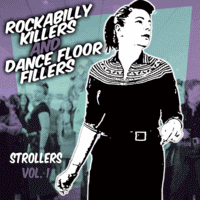

VA - Rockabilly Killers And Dancefloor Fillers - Strollers, Vol. 1 (Compilation, 2016)
the Bullets:
01 - Loaded Gun (3:27)
Jack Rabbit Slim:
02 - Kitten With A Whip (2:28)
Rusti Steel and the Star Tones:
03 - Prisoner Of Your Charms (3:13)
the Hicksville Bombers:
04 - Voodoo Doll (2:40)
the Cheaterslicks:
05 - Gimme Just A Lil' Bit (3:14)
Rudy La Crioux and the All Stars:
06 - (I Don't Know Why) She Make's Me Feel Blue (2:51)
Sharna-Mae and the Mayhems:
07 - Watching You (2:43)
the Retrobaits:
08 - Sloppy Preserve (2:54)
the Bullets:
09 - She's So Sleazy (3:08)
Jack Rabbit Slim:
10 - Daddy's Got A Gun (2:19)
the Wolftones:
11 - Love Struck (2:46)
Rusti Steel and the Star Tones:
12 - Without Your Love (3:27)
the Hicksville Bombers:
13 - Can't Buy Your Goodbye (2:29)
Jack Rabbit Slim:
14 - Small Time Casonova (3:26)
the Bullets:
15 - Panic Attack (2:16)
Howlin' Wilson:
16 - On The Buses Theme (Happy Harry) (1:58)
Rudy La Crioux and the All Stars:
17 - You In My Heart (2:22)
Jack Rabbit Slim:
18 - Dirty Magazine (3:35)
the Hicksville Bombers:
19 - I've Changed My Mind (3:21)
the Bullets:
20 - While You Were Sleeping (3:07)
the Wolftones:
21 - Pick Me (3:05)
Jack Rabbit Slim:
22 - Natalie Wood (4:37)
Rudy La Crioux and the All Stars:
23 - Crazy Blues (2:07)
the Bullets:
24 - Tail Of A Snake (2:58)
Jack Rabbit Slim:
25 - Speed Of Love (3:03)
Lew Lewis:
26 - Stroll Earthquake (2:22)
© The Western Star Recording Company :: [Digital]
Notes
Review
346/366 (Project 366)
Great compilation of all different Strollers from Western Star. Really modish, between times but sixties, sometimes erotic, sometimes exotic, highly rockin' and shakin' rockabilly killers and dancefloor fillers indeed.
Here are six songs from Jack Rabbit Slim, that cover the band's rather recognizable and unique style. And this amazing Bob Butfoy vocals just chicly merges into the atmosphere. Sleazy, raw and a bit garage "Kitten With A Whip", cool groove of "Daddy's Got A Gun", fancy and punchy "Small Time Casonova", hugely epic tune "Dirty Magazine" with so wonder sound, heavy and also a bit garage rockin' and rollin' "Natalie Wood", emotional and nervous "Speed Of Love".
Also five adorable songs from the Bullets. Such a very relatively bass and dapper voice with all songs. Brass section and danceable, erotical cocktail tune with "Loaded Gun". Then a bit more raw tune, also groovy, driving and maybe sexy "She's So Sleazy". Combined moods in rockin' and rollin' "Panic Attack". And essentially the same band-specific sound of the song "While You Were Sleeping", where organ (keyboard) is also present. While "Tail Of A Snake" is completely smasher one! Hard, mean and heavy strolling.
The three songs from Rudy La Crioux and the All Stars are slightly different. More classic sound, more general Rock'n'Roll, more swinging Rockabilly. Fancy tune and way of singing of "(I Don't Know Why) She Make's Me Feel Blue" is memorable. "You In My Heart" is very stylish, wavy, vintagely and kind of rockin 'stroller. Dreamy mood of "Crazy Blues" with so sweet sleepstrolling.
the Hicksville Bombers comes with a very thrill track "Voodoo Doll". The smoky tone of vocals also goes well with "Can't Buy Your Goodbye". Such a swampy stroll ballad. "I've Changed My Mind" is another dreamy track on the tracklist, charming.
Rusti Steel and the Star Tones with their very very own style and manner. "Prisoner Of Your Charms" is about stunning groove, mad with love, tuny claps. "Without Your Love" is about more experimental and exotic sound.
"Love Struck" by the Wolftones is so fancy tune with great touch of organ (keyboard) use. And their "Pick Me" is no less finely. The arrangements are no-frills, but pretty lovely. Vocals perky too (remind sixties, garage rockin' and rollin').
There is also one instrumental track from the Retrobaits. "Sloppy Preserve" is a superb instrumental stroller. More mighty can only be a song from the Cheaterslicks - "Gimme Just A Lil' Bit". Such a Rockabilly Rock! Although, of course, a compilation without a song with female vocals could not be truly mighty. Thus, it is great to meet song by Sharna-Mae and the Mayhems. "Watching You" is about female vocals, gruff guitars, hard and heavy, lyrics. Cruel as a woman can be.
There is also a quirky stroll theme in the tracklist (Howlin' Wilson - On The Buses Theme (Happy Harry)). Funny in some ways and with a brass section. The compilations ends with a pretty killer track "Stroll Earthquake" by Lew Lewis. Vigorously, dynamic, sonorous.